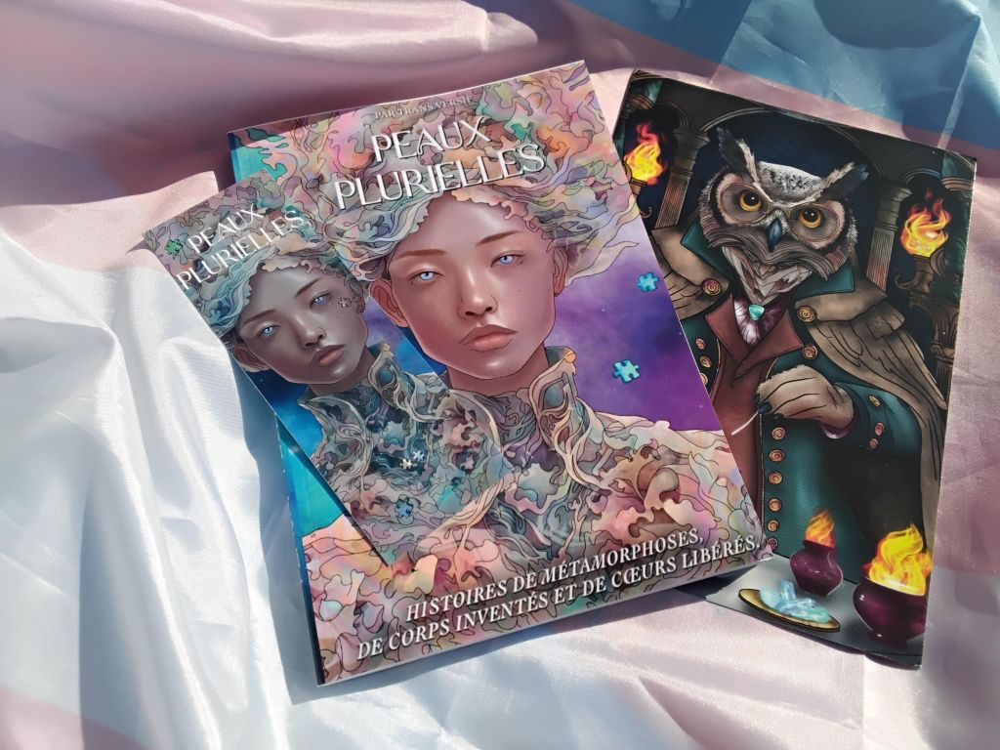
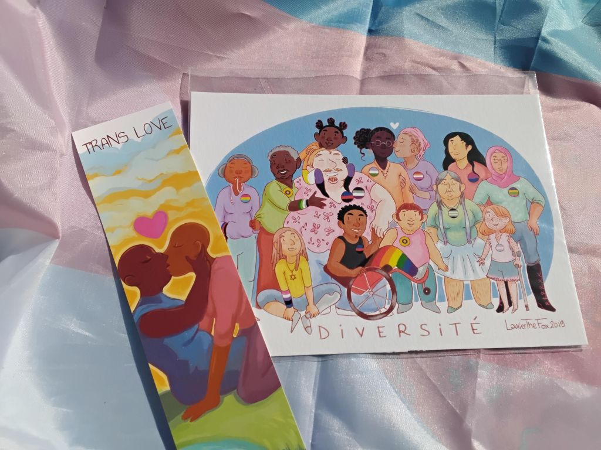

Les lots à gagner - Challenge L'art comme acte politique !
-
1 lot offert par BWYA : au choix un binder ou une tucking
-
1 lot offert par Transboutik : un bon d’achat de 30€
-
1 lot offert par Transcripteur : la BD "1 an sous T", un marque-page et 2 petites cartes "braille"

-
1 lot offert par Trans-versif : son livre "Peaux Plurielles", un marque-page et un print A5 
-
1er lot offert par Laurier The Fox : le livret pédagogique et illustré "j’ai un•e ami•e trans et/ou non binaire!", un marque-page "Merci pour ton soutien" et une carte postale

-
2e lot offert par Laurier The Fox : un print A5 "Pride LGBTI+" sur papier coton 310g et un marque-page "Magical trans power"

-
3e lot offert par Laurier The Fox : 4 marques-pages et une carte postale

-
4e lot offert par Laurier The Fox : un print A5 "Diversité" sur papier coton 310g et un marque-page "trans love"
 -
3 lots offerts par Nos Enfants Trans : petites pieuvres faites à la main par Nathan